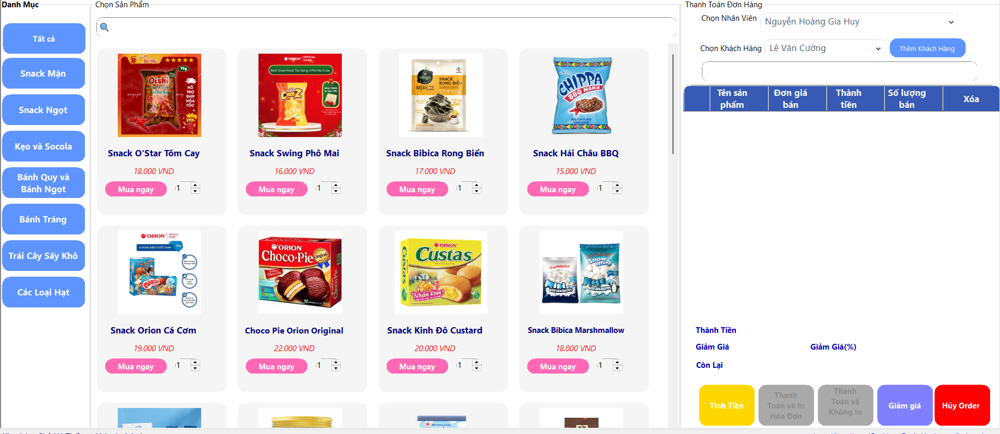

Chào mừng đến Muchie Corner!

Hướng dẫn sử dụng – Thống kê sản phẩm
- Chọn hãng sản xuất: Người dùng chọn từ danh sách các hãng như Orion, Bibica, Vinamilk... để lọc sản phẩm theo hãng tương ứng.
- Chọn loại sản phẩm: Có thể chọn các loại như Snack Mặn, Snack Ngọt, Kẹo, Socola... để thu hẹp kết quả thống kê.
- Lọc kết quả: Nhấn nút "Lọc kết quả" để hiển thị danh sách sản phẩm phù hợp với tiêu chí đã chọn.
- Bảng thống kê sản phẩm: Kết quả sẽ hiển thị trong bảng gồm các cột:
- STT
- Hãng sản xuất
- Loại
- Tên sản phẩm
- Đơn giá
- SL (Số lượng)
- Thành tiền
- Chuyển trang: Sử dụng các nút mũi tên để di chuyển qua lại giữa các trang kết quả nếu có nhiều sản phẩm.
- In thống kê: Nhấn vào biểu tượng máy in để in bảng thống kê sản phẩm.
- Xuất file: Nhấn vào biểu tượng lưu để xuất dữ liệu bảng thống kê sang các định dạng như PDF, Excel, v.v.
Lưu ý: Cần chọn ít nhất một tiêu chí (hãng sản xuất hoặc loại sản phẩm) trước khi nhấn "Lọc kết quả" để tránh việc không hiển thị dữ liệu.